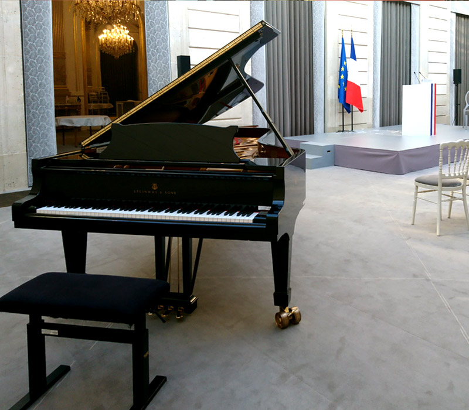

Voyages
Voyager est l'une de mes plus grandes passions. Lorsqu'on voyage, on s'expose à de nouvelles cultures, de nouvelles habitudes, de nouvelles manières de vivre, de penser, de parler, de nouvelles cuisines, etc....
Voyager nous permet également de nous ouvrir l'esprit, cela permet de se rendre compte qu'il n'existe pas une seule sorte de réussite dans la vie, découvrir des opinions et points de vue avec des personnes ayant vécu des expériences différentes des notres.
Le continent que je préfère visiter est l'Asie. Sa cuisine, sa culture du partage, son mélange entre tradition et modernité, ses paysages rendent ce continent merveilleux. La nourriture est surtout plus abordable qu'en France. Si je devais vous conseiller un visiter, ce serait celui-ci. Puisque l'Asie changera pour sûr votre manière de voir les choses.

La musique
L'un de mes passe-temps favoris est la musique. Il n'existe pas un seul jour dans ma vie, dans lequel je n'écoutepas de la musique. J'ai commencé la musique à l'âge de 3 ans avec l'éveil musical. Dès 5 ans, j'ai commencé le piano jusqu'à mes 15 ans. J'ai ensuite pratiqué de la guitare pendant 2 années.
Pour moi, la musique est un moyen de me relaxer est de me reconnecter au monde réel. Elle me permet de faire du tri dans mes idées et me mettre au travail. C'est également pour moi le meilleur moyen de développer sa créativité lorsqu'on est en panne d'inspiration.
Sans la musique, je ne serais pas qui je suis aujourd'hui et je suis reconnaissant envers elle pour m'avoir accompagné dans mon développement personnel.

Les jeux vidéo
Les moments de joie et d'euphorie que j'aurais passé seul ou entre amis devant un jeu vidéo resteront gravés à jamais dans ma mémoire. Ces moments passés à plusieurs avant des examens ou en vacances jusque tard le soir sont des moments de liberté, où rien ne semble nous inquiéter ou nous arrêter.